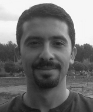

Kasım Sinan Yıldırım

Welcome to my homepage! I am currently an associate professor at the University of Trento, Department of Information Engineering and Computer Science. I created this website to share the output of my studies and be reachable. I am a member of HIPEAC community.
I got my PhD in Computer Science and Engineering from Ege University, Turkiye, in 2012. Between 2015 and 2017, I was a postdoctoral researcher at the Embedded and Networked Systems Group at Delft University of Technology, the Netherlands. I was an embedded software engineer at Beko Electronics (Grundig) R&D, Turkiye between 2003 and 2007.
I am interested in the research problems of low-power and networked embedded sensing systems. Together with my learning partners, we study sensor networks, wireless protocols, self-organizing and distributed algorithms, operating systems/run-times, architectural support, digital design, intermittent computing, and tiny machine learning. You can check ENT-Lab Research Group to see our software releases.
Email me if you are interested in doing research with me. I have:
- Open positions for postdocs and PhDs;
- Several master thesis projects; and
- Thesis topics and internship projects for undergraduate students.
Publications (selected)
Please check my GoogleScholar profile for a full list of publications.
- Fast-Inf: Ultra-Fast Embedded Intelligence on the Batteryless Edge, Leonardo Custode, Farina, Pietro, Eren Yildiz, Renan Beran Kilic, Kasim Sinan Yildirim, Giovanni Iacca
SenSys’24 - Memory-efficient Energy-adaptive Inference of Pre-Trained Models on Batteryless Embedded Systems, Farina, Pietro, Biswas, Subrata, Yildiz, Eren, Akhunov, Khakim, Ahmed, Saad, Bashima Islam, Kasim Sinan Yildirim
EWSN’24 - Adaptable Runtime Monitoring for Intermittent Systems, Yildiz, Eren, Akhunov, Khakim, Riva, Lorenzo Antonio, Goknil, Arda, Kurtev, Ivan, and Yildirim, Kasim Sinan
EuroSys’24 - The Internet of Batteryless Things, Ahmed, Saad, Bashima Islam, Kasim Sinan Yildirim, Marco Zimmerling, Przemysław Pawełczak, Muhammad Hamad Alizai, Brandon Lucia, Luca Mottola, Jacob Sorber, and Josiah Hester.
Communications of the ACM2024 - Efficient and Safe I/O Operations for Intermittent Systems, Yildiz, Eren, Ahmed, Saad, Islam, Bashima, Hester, Josiah, and Yildirim, Kasim Sinan,
EuroSys’23 - Protean: An Energy-Efficient and Heterogeneous Platform for Adaptive and Hardware-Accelerated Battery-free Computing, Bakar, Abu, Goel, Rishabh, Winkel, Jasper, Huang, Jason, Ahmed, Saad, Islam, Bashima, Pawelczak, Przemyslaw, Yildirim, Kasim Sinan, and Hester, Josiah
ACM SenSys’22 - MPI: Memory Protection for Intermittent Computing, Grisafi, Michele, Ammar, Mahmoud, Yildirim, Kasim Sinan, and Crispo, Bruno,
IEEE Transactions on Information Forensics and Security 2022 - AdaMICA: Adaptive Multicore Intermittent Computing, Akhunov, Khakim, and Yildirim, Kasim Sinan,
UbiComp'22(IMWUT) - Immortal Threads: Multithreaded Event-driven Intermittent Computing on Ultra-Low-Power Microcontrollers, Yıldız, Eren, Chen, Lijun, and Yıldırım, Kasim Sinan,
OSDI'22 - ETAP: Energy-aware Timing Analysis of Intermittent Programs, Erata, Ferhat, Yıldız, Eren, Goknil, Arda, Yıldırım, Kasım Sinan, Piskac, Ruzica, Szefer, Jakub, and Sezgin, Gökçin,
ACM Transactions on Embedded Computing Systems (TECS)Jul 2022 - Virtualizing Intermittent Computing, Durmaz, Çağlar, Yıldırım, Kasım Sinan, and Kardas, Geylani,
IEEE Internet of Things JournalJul 2022 - Reliable Transiently-Powered Communication, Torrisi, Alessandro, Yıldırım, Kasım Sinan, and Brunelli, Davide,
IEEE Sensors JournalJul 2022 - REHASH: A Flexible, Developer Focused, Heuristic Adaptation Platform for Intermittently Powered Computing, Bakar, Abu, Ross, Alexander G, Yildirim, Kasim Sinan, and Hester, Josiah
ACM UbiComp'21(IMWUT) - Reliable Timekeeping for Intermittent Computing, Winkel, Jasper, Delle Donne, Carlo, Yildirim, Kasim Sinan, Pawełczak, Przemysław, and Hester, Josiah,
ASPLOS'20 - Time-sensitive Intermittent Computing Meets Legacy Software, Kortbeek, Vito, Yildirim, Kasim Sinan, Bakar, Abu, Sorber, Jacob, Hester, Josiah, and Pawełczak, Przemysław,
ASPLOS'20 - Multi-hop backscatter tag-to-tag networks, Majid, Amjad Yousef, Jansen, Michel, Delgado, Guillermo Ortas, Yildirim, Kasim Sinan, and Pawełłzak, Przemysław,
Infocom 2019 - InK: Reactive Kernel for Tiny Batteryless Sensors, Yıldırım, Kasım Sinan, Majid, Amjad Yousef, Patoukas, Dimitris, Schaper, Koen, Pawełczak, Przemysław, and Hester, Josiah,
SenSys'18
Program Committee (selected)
- EWSN (2025), MobiSys (2025), DATE (2025), NSDI (2025), EMSOFT (2024, 2023), EnsSys (2024, 2023,2022,2021,2020), IGSC (2024, 2023), IEEE RFID (2023, 2022, 2021, 2020)
Organization
- Publicity Chair, MobiSys 2025
- Technical Program Chair, 2022 IEEE International Workshop on Metrology for Industry 4.0 and IoT
- Organizer, TPC 2017 – The IDEA League Doctoral School on Transiently Powered Computing
- Publicity Chair, HLPC2016 (Hilariously Low-Power Computing) Workshop under ASPLOS
Honours and Awards
-
Best paper runner-up, Zero Power Energy-Aware Communication for Transiently-Powered Sensing Systems, ENSsys’20. -
Best Paper Award, Self Adaptive Safe Provisioning of Wireless Power using DCOPs SASO’17, -
Supervisor Award, 3rd Place, Undergraduate Students Software Projects Competition TÜBİTAK (Turkish Research Foundation)-BİDEB 2242, 2014
Supervised Thesis
- Khakim Akhunov, Ph.D., Enabling Full-Fledged Parallelism on Intermittently Powered Computing 2024
- Welid Ben Yahmed, (co-advised with Danilo Pietro Pau), M.Sc., Tiny Machine Learning for Drift Compensation of Mems Pressure Sensors
- Alessandro Torissi (co-advised with Davide Brunelli), Ph.D., Ultra Low Power Electronics and Communication Methods for Energy-Harvesting Batteryless IoT Devices 2023
- Eren Yıldız, PhD, Systems Support for Intermittent Computing 2023
- Çağlar Durmaz (co-advised with Geylani Kardas), PhD, A programming language and virtual machine for developing intermittently powered systems 2022
- Michele Pio Fragasso (co-advised with Davide Brunelli) MSc, Development of an Intermittent Computing Architecture for Machine Learning on Configurable Platform, 2023
- Luca Caronti (co-advised with Davide Brunelli), MSc, Adaptive Hardware Accelerated Intermittent Deep Neural Network Inference, 2022
- Murat Mülayim, MSc, Fast and bug-free application development for intermittently-powered devices, 2020
- Vito Koortbek (co-advised with Przemyslaw Pawelczak), MSc, Dependable Dynamic Checkpoints for Batteryless Devices, 2019
- Michel Jansen (co-advised with Przemyslaw Pawelczak), MSc, Backscatter Tag-to-Tag Network 2017
Project Proposal Review (selected)
- External Reviewer, Chist-Era Call, 2020
- Panel Member, Academy of Finland, Helsinki (Beyond 5G systems review panel), 2017
Journal Reviewer (selected)
- Proceedings of the ACM on Interactive, Mobile, Wearable and Ubiquitous Technologies, ACM Transactions on Embedded Computing Systems, ACM Transactions on Sensor Networks, Transactions on Cyber-Physical Systems, IEEE Internet of Things Journal, IEEE Sensors Journal, IEEE Transactions on Wireless Communications, IEEE Communications Magazine, IEEE Communications Letters, IEEE Wireless Communications Letters, IEEE Transactions on Control of Network Systems, IEEE Journal of Radio Frequency Identification, IEEE Transactions on Parallel and Distributed Systems
Teaching
- Low Power Embedded Systems (graduate)
- Embedded Software for the Internet of Things
- Computer Architectures
Past teaching
- Logic Design
- Digital Computer Design
- Wireless Embedded Systems (graduate)
- The Principles of Signals and Wireless Communication for Embedded Systems (graduate)
- Distributed Estimation and Control (graduate)
- Distributed Algorithms for Multi-Agent Networks (graduate)